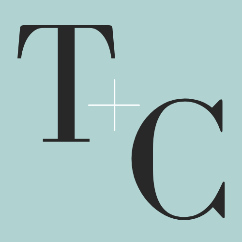
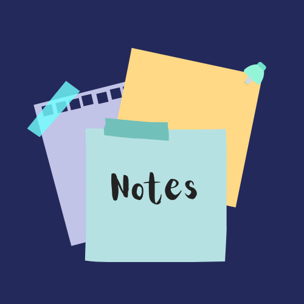
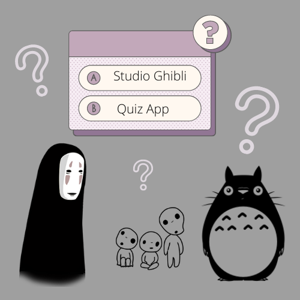

Hello! Welcome to my portfolio.
I'm Christine, a Software Developer and medical Speech-Language Pathologist (SLP) based in Las Vegas, NV. As a healthcare professional and avid rock climber, I love to help people and solve problems! One of my long term goals is to utilize my evolving skills to improve tech accessibility for people with communication disorders and other marginalized communities.
About Me
After obtaining my master's in Speech-Language Pathology, I worked in post-acute rehabilitation, inpatient, and outpatient settings. Through this field, I have had the privilege of helping diverse people with swallowing and communication disorders. I am especially passionate about working with people with aphasia (a language disorder acquired after neurological injury).
I learned software development because I've seen how not everyone is able to reap the benefits of the powerful and rapidly advancing technology that is available today. I wanted to be able to help fill that gap and build solutions for these populations because they are so much more capable given the access and the right tools.
Given my unique perspective and skill-set, I am able to offer the following services:
- Foster productive working relationships with clients and colleagues to develop client-centered products.
- Write code that is clear and communicate its performance on cross-functional teams.
- Design websites and applications that are functional, aesthetic, and accessible.
Projects
TakeCharge
TakeCharge is a health care log app targeted for patients who may not be tech savvy, health literate, and/or whose health care providers do not all use the same patient portal. Users can save and manage information related to their health care providers, visits, and recommendations in a way that THEY can understand. The patient, their caregiver, or their provider can quickly type the information into designated areas throughout the app, using only language that is appropriate for the patient. As a simple, user-friendly app, patients can keep this information easily accessible at their fingertips.
As my first fullstack capstone, I was excited to strengthen my skills by building an app for the communities I want to serve. I would love to learn more about encryption and cyber security to protect sensitive information and be HIPAA compliant.
Skills used: HTML, CSS, JavaScript, ReactJS, NodeJS, Express, PostgreSQL
BetaVzn
BetaVzn was made for rock climbers! They can search for boulder problems based on location and grade. The user can add additional search filters, including minimum grade, maximum grade, and number of results to display. The feature that makes this app unique is its consolidation of Mountain Project information and relevant YouTube videos. The app will return a list of boulder problems and display the following information for a single result: Name of the boulder problem, grade, a link to Mountain Project page, and embedded YouTube videos.
Building this app taught me how understand API documentation and use APIs to fetch data and essentially give LIFE to my apps!
Skills used: HTML, CSS, JavaScript
Noteful
Noteful is a simple note taking app that allows the user to create, save, and edit notes using custom folders. Building this app taught me how to build a fullstack application using ReactJS for the client-side app, Express for the server, and PostgreSQL for the database. I learned how to deploy each part of the app to arrive at this live project.
Skills used: HTML, CSS, ReactJS, NodeJS, Express, PostgreSQL
Studio Ghibli Quiz
This is a Studio Ghibli Quiz that tests how much the user knows about the Japanese animation studio. This quiz will tell the user if their answer was correct, keep score as they progress through the quiz, display their results at the end, and allow them to restart the quiz. Building this app allowed me to practice using jQuery to make a webpage interactive.
Skills used: HTML, CSS, JavaScript, jQuery